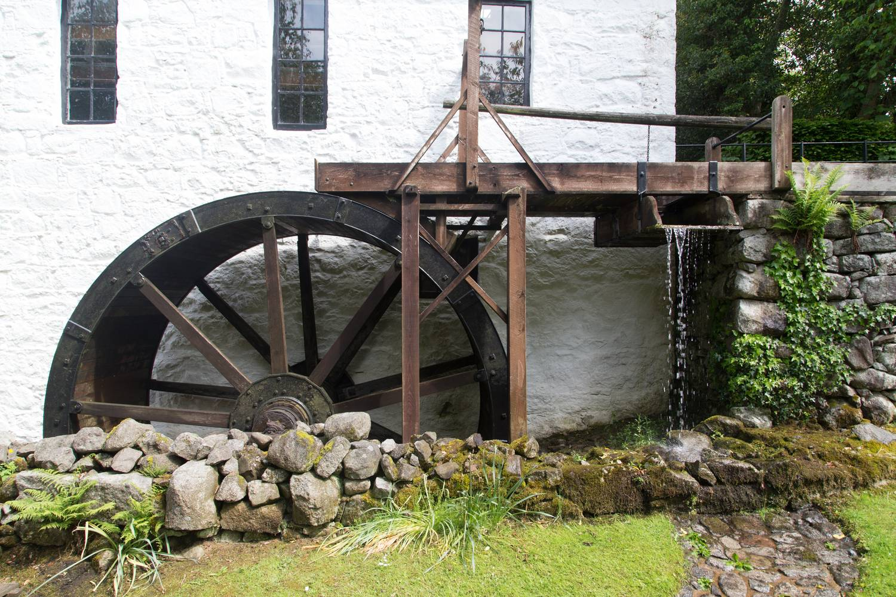
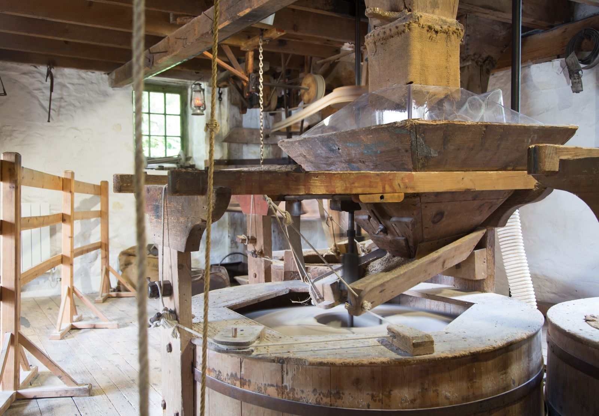
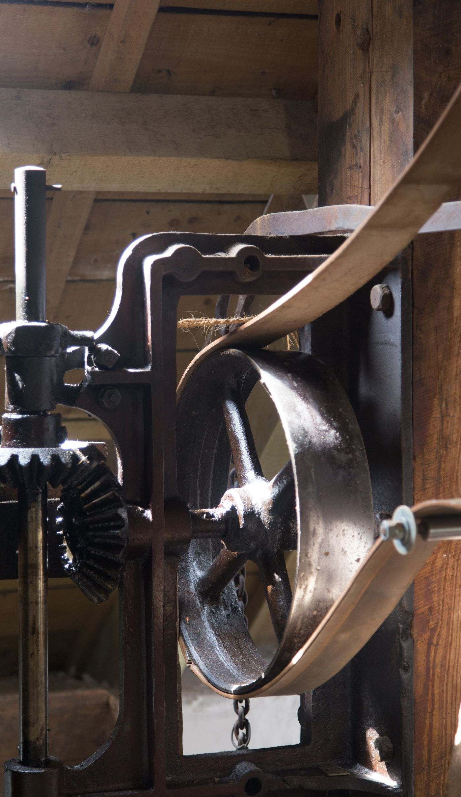
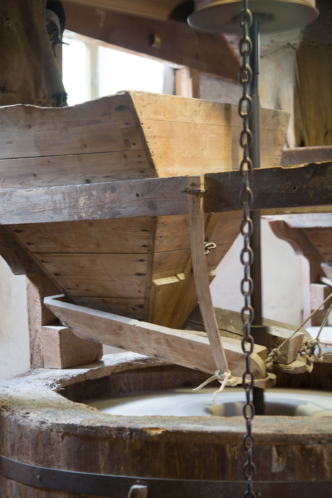

Four rooms in a
working meal mill
WhereNew Abbey, Dumfries and Galloway. Half a mile from Sweetheart Abbey, a mile and a half from the Solway shore, under Criffel.
What it isAn eighteenth-century oat mill on the lade below Loch Kindar. Overshot wheel, two pairs of stones, both still turning. We grind and sell meal at the door.
The catchIt is a mill, not a hotel. Three of the four rooms are up mill stairs and there is no lift. On a milling day the building is loud.
The building, photographed









A mill that still mills
Bellman's has been grinding oats, on and off, since 1791. The wheel drives two pairs of stones through the pit wheel and the great spur, and when the sluice is up the whole building takes on a low working noise you feel through the soles of your feet before you hear it. We grind on Thursdays from November to April, when there is water in the lade, and we sell the meal at the door in paper sacks.
The four rooms were put in over eight years by two people who are not hoteliers. That shows, mostly in ways we are glad about — the floors are the original floors, the trap in the top room is still where it was, and nothing has been levelled off to make a corridor. It also shows in the stairs, which are steep, and in the fact that breakfast is at one table at eight.
Almost everything a guest needs to decide is on this page or the next one. If it is not, we would rather you rang.
Before you book
The things people wish they had known. None of this is buried in a terms page.
- Three of four rooms are up stairs, and there is no lift
- The Wheel Room is step-free from the car. The others are 14, 18 and 31 steps, on mill stairs with a turn. The Bin Floor has a rope rather than a handrail on the last flight and 1.90 m of headroom at the trap.
- On a milling day the building is loud
- Thursdays, November to April, roughly nine to two. It is a low continuous noise plus the stones, and you feel it as much as hear it. The Kiln Room is the one that escapes it. If you are coming to work quietly, tell us and we will not put you above the gearing.
- In summer the wheel usually does not turn
- The lade runs low from June and is at its lowest in August. We can start the wheel for ten minutes for anyone who asks, but a dry July here means a silent mill. See the mill's year before you choose a month.
- The Solway is not a swimming beach
- The tide at Carsethorn comes in across flat sand faster than you can walk, and there is soft ground south of the point. Walk the shore at falling tide, not rising, and not with a dog off the lead. We will show you the tide table on the kitchen wall and we are not being dramatic.
- Breakfast is at eight, at one table
- Porridge from our own meal, and eggs. If you need to leave earlier we will leave you something the night before. We do not do dinner; the inn in the village does, four nights a week, and it is a five-minute walk.
- Dogs, children, and the lade
- Dogs in the Wheel Room and the Stone Floor, £12 a stay. Children over eight, because of the trap and the stairs. The lade is unfenced for its whole length and it is deep enough at the sluice to matter.
Where it is
- Sweetheart Abbey
- 800 m — red sandstone, founded 1273
- Criffel summit
- 569 m high, 4 km — three hours up and back
- Carsethorn and the shore
- 4.5 km
- Southerness lighthouse
- 16 km — built 1749
- Dumfries
- 11 km, buses hourly except Sundays
- Nearest station
- Dumfries. We will collect you if you ask.
The village sits in the gap between Criffel and the Nith estuary, which is why the weather arrives without much warning and why the light in September is the way it is.
Everything above is walkable or a short drive. Nothing on this page is more than a twenty-minute drive except Southerness.